Sommaire
- Introduction à Kubernetes
- Rôle et bénéfices
- Préparation et installation
- Ajout d’un nœud Worker
- Vérifications et dépannage
- Checklist d’installation
- Conclusion
- Annexes — Commandes utiles
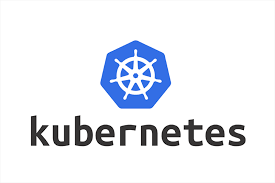
1. Introduction à Kubernetes
Kubernetes (ou K8s) est un orchestrateur open-source de conteneurs qui permet :
- Le déploiement automatisé d'applications conteneurisées
- La mise à l’échelle horizontale ou verticale des services
- L’auto-récupération en cas de panne
- La gestion complète du cycle de vie des pods et services
Explication : Kubernetes agit comme un chef d’orchestre : il prend vos conteneurs
isolés
(Docker ou containerd) et les organise dans un cluster distribué stable et résilient.
2. Rôle et bénéfices
- Automatisation : Déploiement, mise à jour et rollback des applications sans interruption.
- Scalabilité : Ajouter ou retirer des nœuds automatiquement selon la charge.
- Haute disponibilité : Redémarrage automatique des pods défaillants.
- Portabilité : Déploiement sur cloud public, privé ou on-premise.
- Observabilité : Intégration d’outils de monitoring et de logging pour suivre l’état des pods.
3. Préparation et installation (Master & Worker)
3.1 Préparation du système
sudo apt update && sudo apt upgrade -y
sudo swapoff -a
sudo modprobe overlay
sudo modprobe br_netfilter
sudo tee /etc/sysctl.d/k8s.conf <<EOF
net.bridge.bridge-nf-call-ip6tables = 1
net.bridge.bridge-nf-call-iptables = 1
net.ipv4.ip_forward = 1
EOF
sudo sysctl --system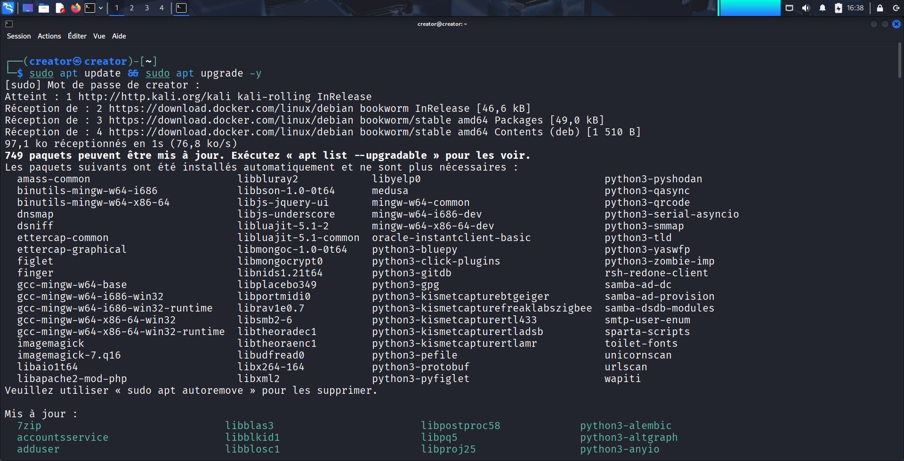
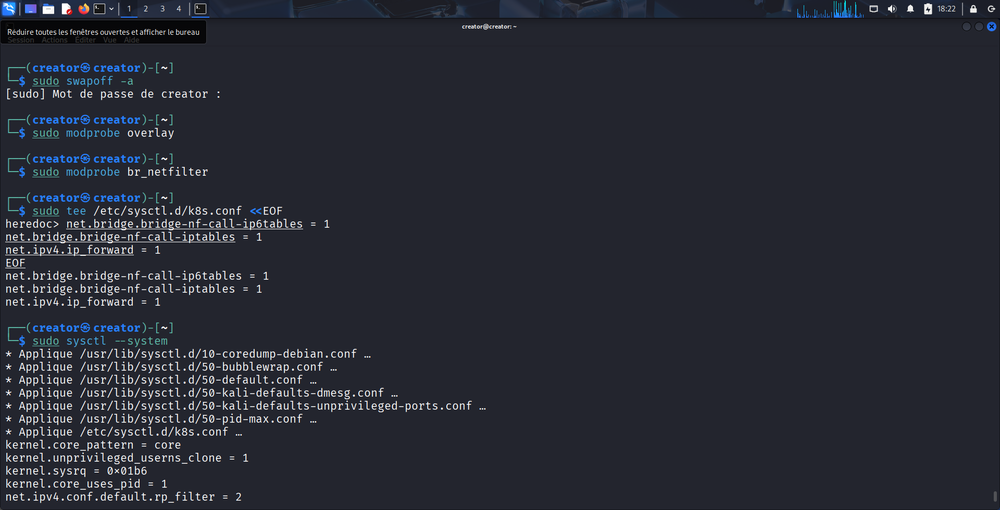
Explications :
sudo apt update && sudo apt upgrade -y: Met à jour le système pour avoir les dernières versions de packages et de sécurité.sudo swapoff -a: Désactive le swap, obligatoire pour Kubernetes pour éviter des comportements inattendus du kubelet.sudo modprobe overlayetbr_netfilter: Modules nécessaires pour le réseau et le stockage des conteneurs.- Création du fichier
/etc/sysctl.d/k8s.conf: Active le routage IPv4 et le filtrage pour Kubernetes. sudo sysctl --system: Applique immédiatement la configuration du noyau.
3.2 Installation de containerd
sudo apt install -y containerd
sudo mkdir -p /etc/containerd
sudo containerd config default | sudo tee /etc/containerd/config.toml
sudo sed -i 's/SystemdCgroup = false/SystemdCgroup = true/' /etc/containerd/config.toml
sudo systemctl restart containerd
sudo systemctl enable containerd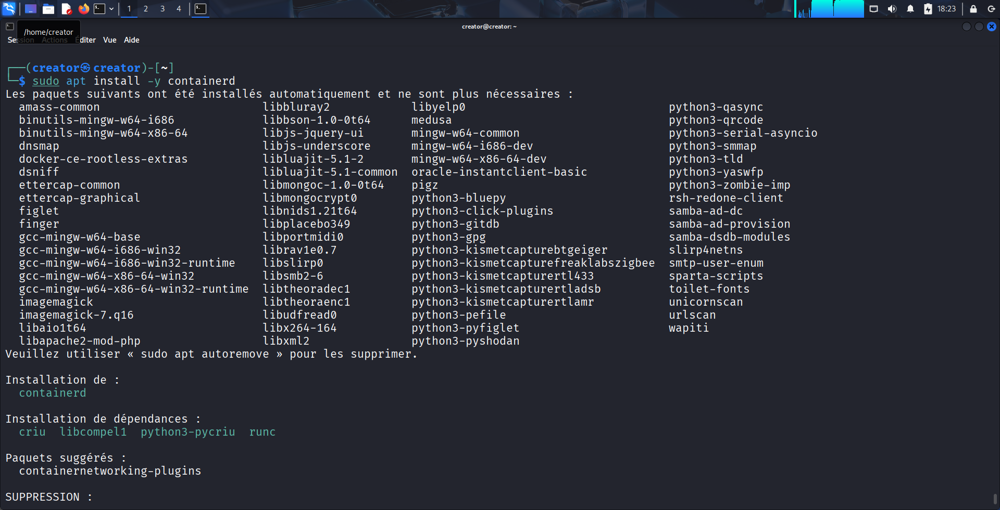
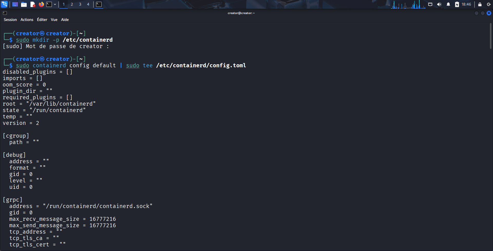
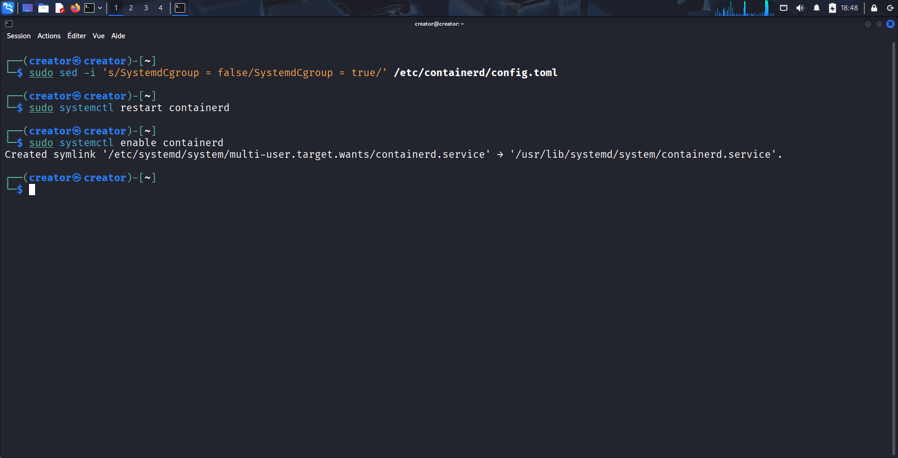
- Containerd est le runtime de conteneurs recommandé par Kubernetes.
- Le fichier
config.tomlest généré pour configurer containerd avec les valeurs par défaut. - La ligne
SystemdCgroup = truepermet à Kubernetes de gérer correctement les cgroups via systemd. - Redémarrer et activer containerd pour qu’il démarre automatiquement au boot.
3.3 Installation kubeadm, kubelet et kubectl
sudo apt install -y apt-transport-https ca-certificates curl
sudo curl -fsSL https://packages.cloud.google.com/apt/doc/apt-key.gpg | sudo gpg --dearmor -o /usr/share/keyrings/k8s-archive-keyring.gpg
echo "deb [signed-by=/usr/share/keyrings/k8s-archive-keyring.gpg] https://apt.kubernetes.io/ kubernetes-xenial main" | sudo tee /etc/apt/sources.list.d/kubernetes.list
sudo apt update
sudo apt install -y kubelet kubeadm kubectl
sudo apt-mark hold kubelet kubeadm kubectl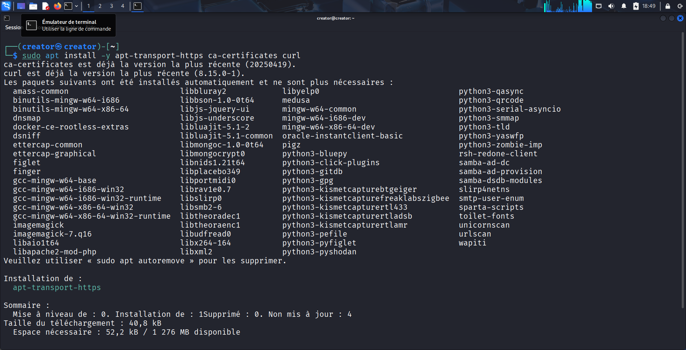
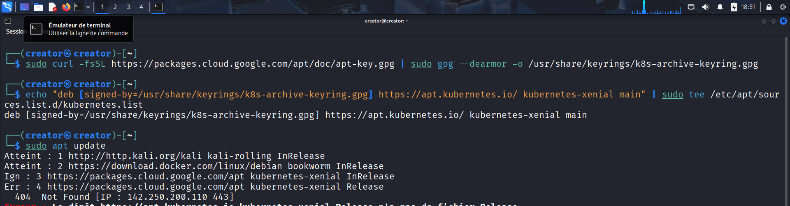
- Ajoute le dépôt officiel Kubernetes pour obtenir les dernières versions stables.
- Installe les trois outils essentiels :
kubeadm: Initialisation et gestion du clusterkubelet: Agent qui tourne sur chaque nœud et exécute les podskubectl: CLI pour interagir avec le clusterapt-mark hold: Empêche les mises à jour automatiques qui pourraient casser la compatibilité.

3.4 Initialisation du Master
sudo kubeadm init --pod-network-cidr=10.244.0.0/16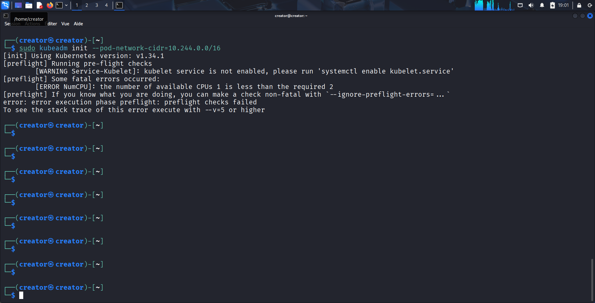
kubeadm initinitialise le cluster Kubernetes sur le master.--pod-network-cidrdéfinit la plage IP pour le réseau des pods (exemple pour Flannel).- À la fin, kubeadm fournit la commande
kubeadm joinpour ajouter les workers.
3.5 Installation du CNI (réseau inter-pods)
kubectl apply -f https://raw.githubusercontent.com/flannel-io/flannel/master/Documentation/kube-flannel.yml- Le CNI (Container Network Interface) permet aux pods de communiquer entre eux.
- Flannel est l’un des plugins réseau populaires. D’autres options : Calico, Weave.
- Après l’installation, les pods comme
CoreDNSdeviennent opérationnels.
4. Joindre un nœud Worker
4.1 Pré-requis sur le Worker
sudo apt update && sudo apt upgrade -y
sudo swapoff -a
sudo modprobe overlay
sudo modprobe br_netfilter
sudo sysctl --system
sudo apt install -y containerd
sudo systemctl restart containerd
sudo systemctl enable containerd
sudo apt install -y kubeadm kubelet kubectl
sudo apt-mark hold kubelet kubeadm kubectl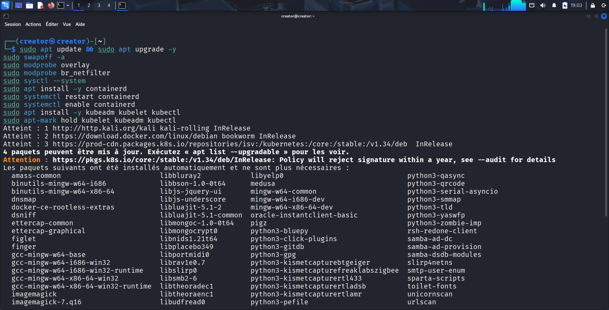
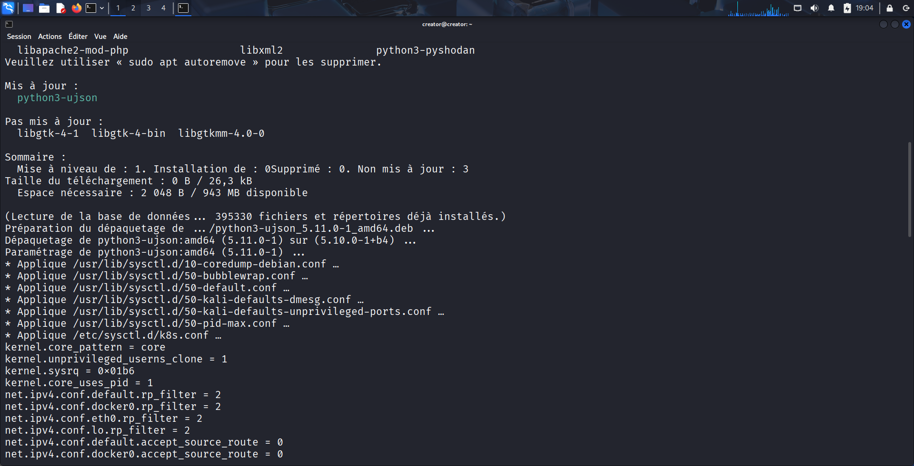
- Préparer le worker exactement comme le master : packages, swap désactivé, modules, containerd et kubeadm.
4.2 Joindre le cluster
sudo kubeadm join :6443 --token --discovery-token-ca-cert-hash sha256: - Cette commande est générée par
kubeadm initsur le master. - Elle permet au worker de s’enregistrer auprès du control plane.
5. Vérifications et dépannage
# Vérifier l’état des nœuds
kubectl get nodes
# Logs kubelet sur un worker
sudo journalctl -u kubelet -f- Si le worker apparaît en
NotReady, vérifier : - Swap désactivé
- Heure synchronisée
- CNI installé correctement
- Ports ouverts (6443, 10250, 2379-2380, NodePort)
6. Checklist d’installation
- Système à jour
- Swap désactivé et /etc/fstab modifié
- Modules overlay + br_netfilter chargés
- sysctl appliqué
- Containerd installé et configuré (SystemdCgroup=true)
- Kubeadm, kubelet et kubectl installés et en hold
- Master initialisé (kubeadm init)
- CNI installé
- Workers joints avec kubeadm join
- Vérification des nœuds (kubectl get nodes)
- Ports du firewall vérifiés
- Time sync vérifié
7. Conclusion
Kubernetes permet de gérer un cluster de conteneurs de manière automatisée, scalable et résiliente. Une fois installé correctement :
- Déploiement facile des applications
- Gestion simplifiée des pods et services
- Possibilité d’ajouter des nœuds pour scaler horizontalement
- Résilience accrue en cas de panne
Les prochaines étapes incluent :
- RBAC pour gérer les accès
- Intégration de stockage persistant (NFS, Ceph, Longhorn)
- Monitoring (Prometheus, Grafana)
- Déploiement d’applications complexes via Helm
Annexes — Commandes utiles
# Lister les nœuds
kubectl get nodes
# Vérifier les pods
kubectl get pods -A
# Créer un token pour joindre un worker
sudo kubeadm token create --print-join-command
# Redémarrer kubelet
sudo systemctl restart kubelet
# Vérifier status kubelet
sudo systemctl status kubelet